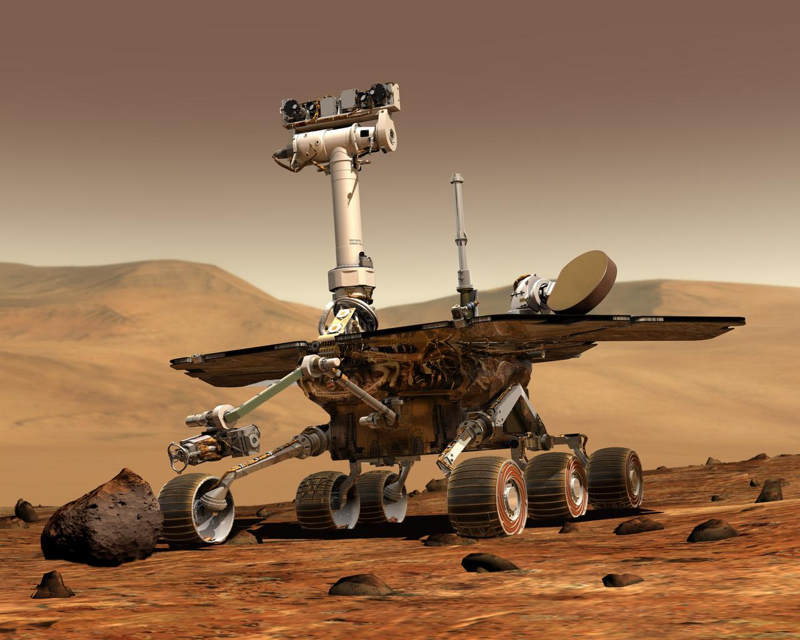
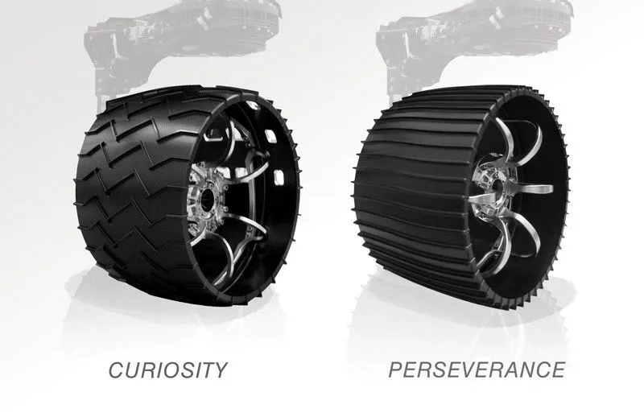
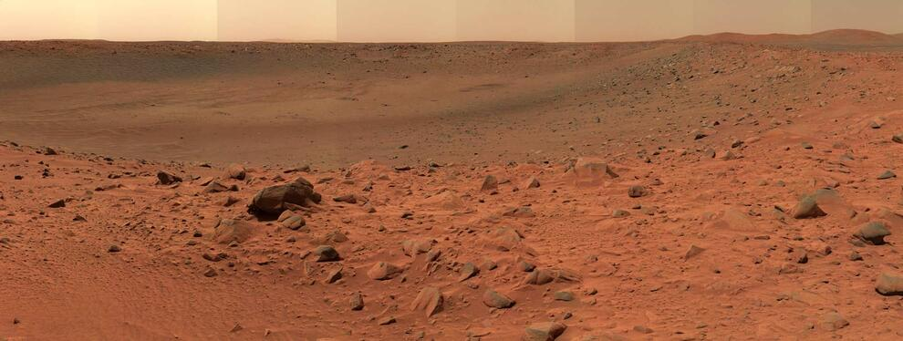

Frequently Asked Questions
Find answers to common questions about NASA's Mars rover missions, the Red Planet, and space exploration technology.
About the Rovers
How do the rovers move on Mars?
The rovers use six-wheel drive with independent steering on each wheel, allowing them to turn in place and climb over obstacles up to 65 cm (25 inches) high. They can travel about 200 meters per day on average.
How do the rovers communicate with Earth?
Rovers primarily communicate through Mars orbiters (like Mars Reconnaissance Orbiter) which relay data to Earth. They can also communicate directly with Earth using high-gain antennas, but this is slower.
What powers the Mars rovers?
Curiosity and Perseverance use radioisotope thermoelectric generators (RTGs) that convert heat from plutonium decay into electricity. Earlier rovers like Spirit and Opportunity used solar panels.
About Mars
Why is Mars called the Red Planet?
Mars appears red due to iron oxide (rust) in its soil. The planet's surface contains large amounts of iron minerals that oxidize (rust), giving it a reddish hue visible even from Earth.
Could humans breathe on Mars?
No, Mars' atmosphere is 96% carbon dioxide with only 0.16% oxygen (compared to Earth's 21%). Humans would need spacesuits or habitat systems to provide breathable air and pressure.
How long is a day on Mars?
A Martian day (called a "sol") is about 24 hours and 39 minutes - slightly longer than an Earth day. A Martian year is 687 Earth days (about 1.9 Earth years).
Mission Operations
How are the rovers controlled?
Teams at NASA's Jet Propulsion Laboratory send commands daily. Due to the 5-20 minute delay in signals reaching Mars, rovers can also perform some autonomous operations using onboard computers.
How long do the rovers last?
Originally designed for 90-day missions, many rovers have far exceeded expectations. Opportunity operated for nearly 15 years (2004–2018), and Curiosity is still active after landing in 2012.
More Resources
Official NASA Resources
Explore more at NASA's Mars Exploration Program
Rover Updates
Follow the latest news from @NASAPersevere and @MarsCuriosity